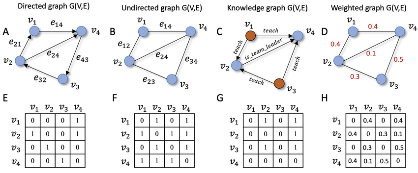

그래프 머신러닝: (1) 들어가며
Graph Representation Learning: Introduction
Hamilton,W.L. Graph Representation Learning. 2020
그래프의 머신러닝 방법에 대해 공부해보고자 한다. Hamilton,W.L.의 책 Graph Representation Learning. 2020을 바탕으로 내용을 정리하였다. 그래프(혹은 네트워크) 이론이나 그래프를 이용한 머신러닝 기법에 관심이 있는 (나를 포함한) 사람들에게 조금의 도움이 되기를 바란다.
그래프(graph)는 복잡한 시스템을 나타내는 보편적인 수단이다.
- 그래프는 노드(node)와 그들 사이의 엣지(edge)로 이루어져 있다. 예를 들어, 소셜 네트워크는 개인을 나타내는 노드와 친구 관계를 나타내는 엣지로 표현될 수 있다.
그래프란?
그래프: \(\mathcal{G} = (\mathcal{V},\mathcal{E})\)
- 그래프는 노드 집합 \(V\)와 엣지 집합 \(\mathcal{E}\)로 정의된다. 노드 \(u \in \mathcal{V}\)에서 노드 \(v \in \mathcal{V}\)로 가는 엣지를 \((u,v) \in \mathcal{E}\)로 나타낸다.
단순그래프(simple graph): 두 노드 간 최대 하나의 엣지를 가지고, 노드 스스로 연결하는 엣지가 없으며, 방향이 없는(undirected) 그래프
인접행렬(adjacency matrix): \(A \in \mathbb{R}^{|\mathcal{V}| \times |\mathcal{V}|}\)
\(A[u,v] = \begin{cases} 1 & \quad \text{if } (u,v) \in \mathcal{E} \\ 0 & \quad \text{otherwise} \end{cases}\)
만약, 그래프가 방향이 없는 엣지로 이루어져 있다면 \(A\)는 symmetric matrix가 된다.
weighted 엣지를 가지는 경우 \(0, 1\)이 아닌 실수 원소를 가지는 인접행렬이 된다.

Figure 2 in Xu (2021) Different types of graphs and their corresponding adjacency matrix representations
다중관계(Multi-relational) 그래프
\((u,\tau,v) \in \mathcal{E}\)
두 종류 이상의 관계에 대한 연결성을 나타낼 수 있는 그래프
관계 \(\tau \in R\)가 있으며, 각 종류의 관계 \(\tau\)마다 인접행렬 \(A_\tau\)가 있다.
이때 인접행렬은 다음과 같은 3차원이다: \(A \in \mathbb{R}^{|\mathcal{V}| \times |\mathcal{R}| \times |\mathcal{V}|}\)
multi-relational 그래프에는 heterogeneous와 multiplex 그래프가 있다.
Heterogeneous 그래프
- \(\mathcal{V}=\mathcal{V_1} \cup \mathcal{V_2} \cup \cdots \cup \mathcal{V_3}\) where \(\mathcal{V_i} \cap \mathcal{V_j} = \emptyset\) for all \(i \neq j\)
- 즉, disjoint한 노드 부분집합으로 구성된 노드 집합
- 예시: 노드(약 노드집합, 질병 노드집합), 엣지(약-약: 다약부작용, 약-질병: 치료)
- 관계 \(\tau_i\)는 두 노드 부분집합 사이 연결: \((u,\tau_i, v) \in \mathcal{E} \rightarrow u \in V_j, v \in V_k\)
- 이 때 \(j \neq k\)이면 multipartite 그래프라고 한다. (즉, 다른 부분집합 간의 엣지만 존재)
Multiplex 그래프
- \(k\)개의 층(layers)의 집합으로 이루어진 그래프
- intra-layer 엣지(같은 layer 안)와 inter-layer 엣지(서로 다른 layer 사이)가 있다.

Figure 1 in Hammoud & Kramer (2020) Node-colored Graphs
Feature information
- 노드의 특징(feature or attribute) (예: 소셜 네트워크에서 한 사람(노드)의 프로필 사진 등 특징) 정보
- feature는 실수 행렬로 나타냄: \(X \in \mathbb{R}^{|V| \times m}\)
- 각 노드 \(u \in V\)에 대해 \(m\)개의 feature
- heterogeneous 그래프에서는 보통 각 종류의 노드는 각각의 특징 set을 가진다.
머신러닝과 그래프
노드 분류(node classification)
레이블된 노드를 학습하여, 레이블되지 않은 노드를 분류
기존의 i.i.d.(independent and identically distributed)를 가정하는 지도학습 모형과 달리 i.i.d.를 가정하지 않는다. 대신, 노드 간 연결 집합을 모델링 한다.
접근방법
- homophily(동종선호): 그래프의 이웃 노드 간에 유사한 feature를 공유한다는 개념
- structural equivalence: 유사한 이웃 구조를 가진 노드가 유사한 레이블을 가진다는 개념
- heterophily(이종선호): 한 노드가 다른 레이블의 노드와 우선적으로 연결될 것을 가정
관계 예측(relation prediction)
- 주어진 노드 집합과 부분적인 엣지 집합을 활용하여 누락된 엣지를 예측하는 작업
- 작업의 복잡성은 그래프 유형에 따라 다르며, 단순한 그래프에서는 이웃을 공유하는 노드 쌍을 기반으로 하는 간단한 방법으로 성능을 높일 수 있지만, 복잡한 다중 관계 그래프에서는 복잡한 추론이 필요하다.
- 관계 예측은 지도 및 비지도 학습 개념을 혼합하며 그래프 도메인에 특화된 inductive bias가 필요하다.
- inductive bias: 귀납적 추론을 수행하기 위한 학습 모델이 갖고 있는 가정들의 집합
- 또한 단일 그래프 내에서 예측하는 경우와 여러 겹치지 않는 그래프 간 예측을 하는 경우 등 다양한 변형이 있다.
커뮤니티 감지(community detection)
- 위의 노드 분류와 관계 예측은 지도학습에 대응되는 작업이었다면, community detection은 비지도학습/클러스터링에 대응된다.
- community detection은 주어진 \(\mathcal{G}=(\mathcal{V},\mathcal{E})\)로 잠재적인 커뮤니티 구조를 추론한다.
- ex. Louvain 알고리즘, Girvan-Newman 알고리즘, Label Propagation 등
그래프 분류, 회귀, 클러스터링 (graph classification, regression, clustering)
- 그래프 하나하나를 대상으로 분류하거나, 그래프 특성을 예측하거나, 클러스터링한다.
- 여러 그래프로 구성된 데이터를 가지고 특정 그래프에 대해 작업한다.
참고자료
[1] Hamilton, W. L. (2020). Graph Representation Learning. Morgan & Claypool Publishers.
[2] Hammoud, Z., & Kramer, F. (2020). Multilayer networks: aspects, implementations, and application in biomedicine. Big Data Analytics, 5(1), 2.
[3] Xu, M. (2021). Understanding graph embedding methods and their applications. SIAM Review, 63(4), 825-853.